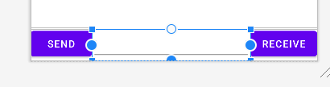
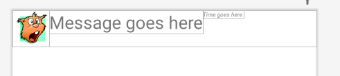
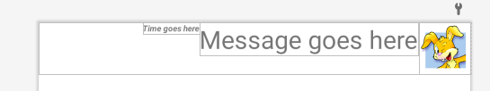

Open your AndroidManifest and make sure that the <intent-filter> is inside the declaration of the ChatMessage tags:
<activity>
android:name=".ChatRoom"
android:exported="true">
<intent-filter>
<action android:name="android.intent.action.MAIN" />
<category android:name="android.intent.category.LAUNCHER" />
</intent-filter>
</activity>
The activity has
<action android:name="android.intent.action.MAIN" />
<category android:name="android.intent.category.LAUNCHER" />
in the intent-filter tags meaning that it is the activity that gets launched when the application is started.
Take the starting point that was covered in the previous pages but now modify the ArrayList<String > messages so that it holds a new ChatMessage class that you must create:
ArrayList<ChatMessage> messages;
This ChatMessage class will store the data required for each message sent (message, time sent, and which button was clicked)
Start by creating a ChatMessage class that has:
Then create a constructor for that class that sets all 3 values:
ChatRoom(String m, String t, boolean sent)
{
message = m;
timeSent = t;
isSentButton = sent;
}
The constructor should be the only way possible for setting the values, but you should write 3 getter functions that return the values of the variables.
Next modify your ChatRoom layout so that there is also a Receive button on the opposite side of the EditText: 
In the click handler for the Send button, you are no longer adding a String to the messages ArrayList but instead create a new ChatMessage object that takes the string message that was typed, a String representing the time that the button was clicked, and a boolean true to specify that it was the Sent button that was clicked
As for a String representing the time sent, use this:
SimpleDateFormat sdf = new SimpleDateFormat("EEEE, dd-MMM-yyyy hh-mm-ss a");
String currentDateandTime = sdf.format(new Date());
In the format string, the E means day of the week, and having 4 EEEE means write the whole word of day of the week. If you only use 2 E, then you get the first 3 letters of days of the week: Mon, Tue, Wed, Thu, etc. The next line creates a new Date() object, which will represent the current date and time of day. The format() function just converts the time to whatever format you want to read it. Take the String message, the currentDateandTime, and true (for the Send button) and create a new ChatMessage object and add it to the list.
Next copy the code for the Send button click handler and add the same for the Receive button click handler. It should also add a ChatMessage object to the messages ArrayList but this time, you put false for the boolean value to indicate that this was not the Send button that caused this ChatMessage to be created. You will also need a receive_message.xml layout file which should be the same as the send_message, only flipped to be a mirror copy on the opposite side of the screen.
Next, you'll need to modify the onBindViewModel() function since you're not just displaying String objects. Now you're representing a ChatMessage object that has a message, and also a String for timeSent. You'll need to set the text for the timeSent TextView as well as the message. You'll also have to modify the MyRowViews() constructor so that it also finds the id of the TextView for the time sent, in addition to the message TextView.
Lastly, you'll have to modify the getItemViewType() function to check what kind of ChatMessage object is at row position If the isSend is true, then return 0 so that the onCreateViewHolder checks the viewType and inflates a send_message layout. If isSend is false, then getItemViewType returns 1 and onCreateViewHolder checks if the viewType is 1 and inflates a receive_message layout.
Sender images - you can also add an ImageView on the send_message and receive_message rows so that it looks like a real chat program. Go to
https://pixabay.com/images/search/avatar
and download 2 images to use in your chat. Save one image as send_image.png, and the other as receive_image.png. Move both the images to your drawable folder and make sure you add them to git tracking so that they get uploaded to your github repository. Then go to your layout send_message.xml and add an ImageView between the Message TextView and the edge of the screen. Your image might be really large, so you can set layout_width and layout_height to 50dp to make it much smaller:

Do the same (but mirror opposite) to the receive_message.xml layout:

If your app can now let a user type into the EditText and hit the Send button, then it should show up in the RecyclerView with the message and string on one side of the screen. If the user types the text and presses the Receive button, then the message should appear on the opposite side of the screen. If the messages appear in the correct order then you are done the lab.
| Item | Marks |
|---|---|
| The Send and Receive buttons add the message that was written to the list, and loads the correct layout | (2 marks) |
| The ChatRoomViewModel class stores has a MutableLiveData < > variable that stores the ArrayList | (1 mark) |
| The ArrayList and data survive rotation changes of the device and no data is lost. | (1 mark) |
| The ChatRoom activity is the activity that gets started when launching the app. MainActivity and SecondActivity are still in the code, however there is no way to get to them. | (2 mark) |